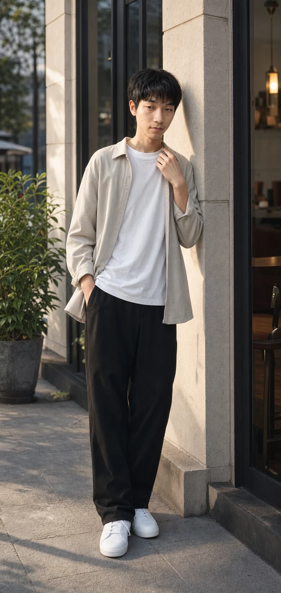

我创造什么
把个人创作方向整理成一套可访问、可交互、已上线的完整网站体验。
赵卢鑫
GOODMOOD
VISUAL DIRECTOR / CREATIVE TECHNOLOGIST
让概念、技术与情绪围绕一个清晰判断进入轨道，最终成为无法忽视的视觉体验。
把个人创作方向整理成一套可访问、可交互、已上线的完整网站体验。
把模糊的气质与情绪，转化为清晰的构图、动态和交付路径。
从视觉判断到页面实现由同一套方向贯穿，减少概念在落地中的损耗。
GOODMOOD / ORBITAL SIGNATUREAUTHOR SIGNAL DETECTED
THIS IS MY POSITION
我把视觉当作一种决策：删掉噪声，识别真正重要的情绪，再为它建立足够精确的形体、节奏与空间。
GOODMOOD 不是装饰性的署名，而是我的创作坐标。每一个作品，都应该让人感到某种以前没有被说清楚的东西。
“技术应该消失在体验背后，但我的判断必须被看见。”
赵卢鑫 / GOODMOOD
ZHAO LUXIN / GOODMOOD
我是赵卢鑫，以 GOODMOOD 为创作身份，常驻 Jiangsu / China。
我在图片创作、视频动态、网站体验、3D 视觉、粒子系统与 AI 辅助创作之间工作，把尚未成形的意象拆解为形体、节奏、光与交互，再重新组织为具有时间感和情绪张力的体验。
无论是一张图片、一支视频，还是一个网站，我关心的不只是它是否“好看”，而是它能否为一个想法建立独有的气场，并在真实媒介里持续成立。

CAPABILITY AS ONE SYSTEM
提炼核心感受，建立世界观、构图、色彩与材质边界，让表达拥有唯一方向。
CONCEPT · ART DIRECTION · SYSTEM用空间、镜头、粒子与程序化运动，让静态概念获得尺度、时间和身体。
FORM · CAMERA · PARTICLES让 AI 参与研究、发散与验证，由我完成事实核验、审美决策和最终交付。
RESEARCH · SYNTHESIS · DECISIONMY WORK / MY DECISIONS
三组科幻视觉实验，用尺度、材质、构图与光线回答同一个问题：一个尚不存在的世界，如何在第一眼就拥有可信度。

恒星边缘的文明尺度机器。
WHY WORK WITH ME
把模糊需求压缩为清晰的视觉命题，确定观众、情绪、尺度和优先级，让后续探索始终围绕目标发生。
现有证明 / 本站从个人定位开始重组全部信息层级从构图、材质和光线，到动态、交互与 AI 工作流，由同一套视觉判断贯穿，避免概念在落地中失真。
现有证明 / 视觉、实时动效与响应式页面统一落地考虑页面比例、响应式呈现、性能和发布，把视觉方向整理为可以被使用、维护和继续扩展的结果。
现有证明 / 原生网站已完成部署并可持续迭代如果你的想法很难被一句常规需求描述清楚，我们可能正适合一起工作。
告诉我你的想法 ↗JUDGMENT × SYSTEM × DELIVERY
从需求到最终体验，我用三个阶段控制方向：先定义真正的问题，再建立可验证的视觉系统，最后为真实场景完成表达与交付。
梳理受众、使用场景和情绪目标，把抽象形容词转化为可以判断的视觉边界：尺度、密度、节奏、材质与光。
组合 3D、粒子、生成式视觉与 AI 辅助工作流，快速建立方向样本。每次迭代只改变关键变量，让选择有依据而不是靠运气。
针对网站、内容或动态媒介完成比例、节奏、性能和响应式调整，同时整理可继续使用的资产与规则。
A PRACTICAL AI WORKFLOW / 45 MIN
从定义任务、组织提示词、生成筛选到整理交付。这是一份面向初学者的公开教程，也是我工作方法的一个可拆解切片。
NEXT / COLLABORATION
告诉我你正在构想什么、它要被谁看见，以及你希望人们在第一眼感受到什么。我们从那个最重要的感觉开始。